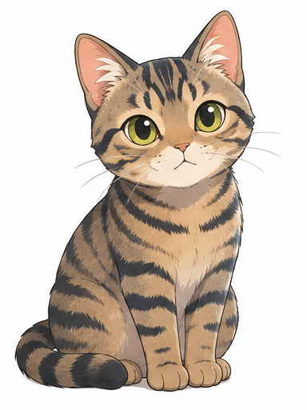
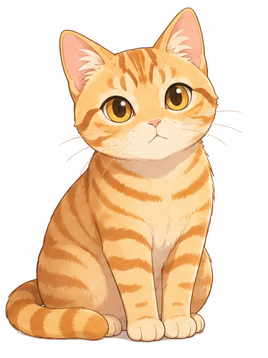
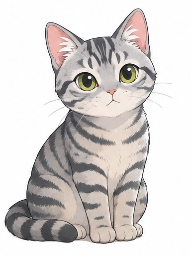
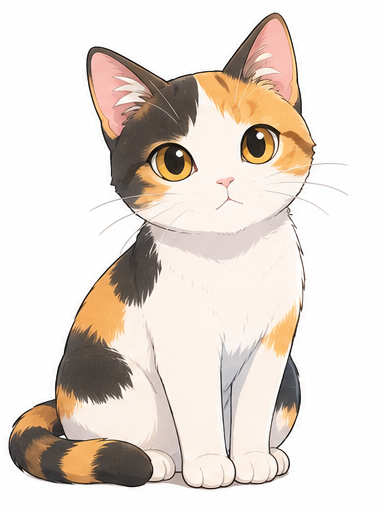
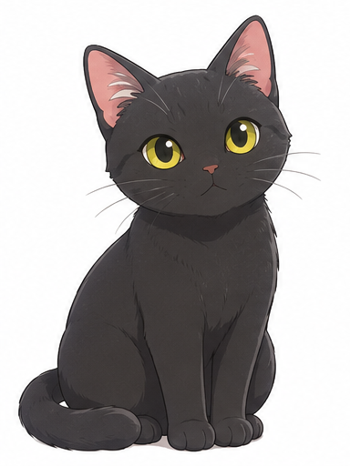
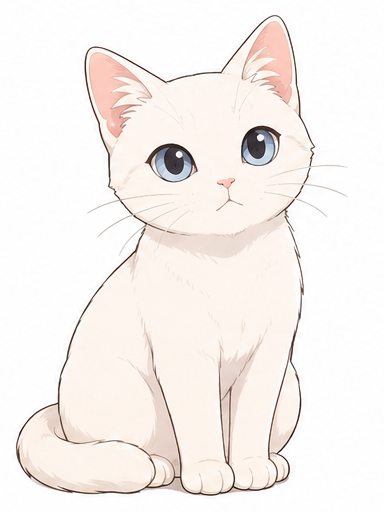
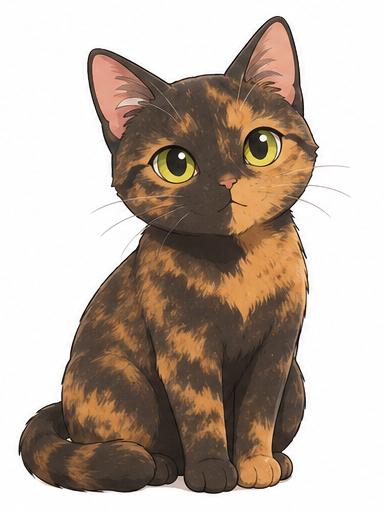
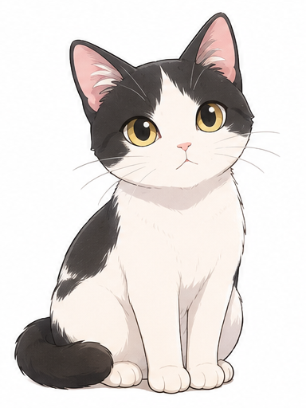

体質：日本の気候風土に長く適応しているため、体が丈夫で病気になりにくい傾向があります。
しっぽ：先が短く曲がった「かぎしっぽ」や、うさぎのように短いしっぽを持つ個体が多いのも特徴です。
茶色ベースに黒やこげ茶の縞模様（ご先祖様である「ヤマネコ」に近い野生的な柄）

全体が茶色の縞模様（甘えん坊で人懐っこい性格が多いとされる）

銀色（サバのような色）に黒の縞模様

白・黒・茶の3色を持つ猫。遺伝的にほとんどがメス

全身が真っ黒の猫（人懐っこく穏やかな性格が多いとされる）

全身が真っ白な猫（神経質な一面を持つことがあるとされる）

黒と茶色が混ざったようなまだら模様（賢くおとなしいと言われる）

白地に黒や茶色のブチ模様が入った猫

普段はおとなしいが、突然狂暴化してタックルをしてくることがある